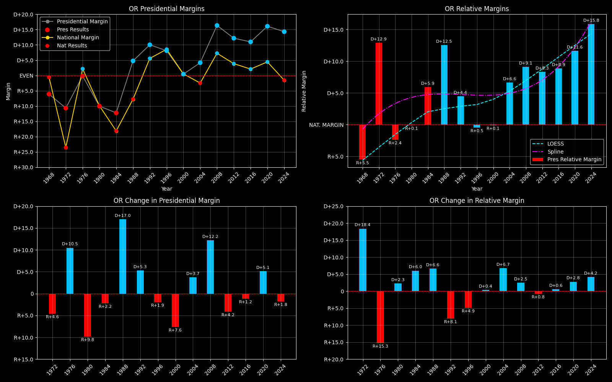

← Back to Map

Oregon (OR) statewide
Oregon (OR) — Data
| Year | D | R | Margin | Rel. Margin | Nat'l Margin | Margin Δ | Rel. Margin Δ | Nat'l Margin Δ |
|---|
| 1976 | 490,407 | 492,120 | R+0.2 | R+2.4 | D+2.3 | 0 | 0 | 0 |
| 1980 | 456,890 | 571,044 | R+11.1 | R+0.8 | R+10.3 | R+10.9 | D+1.7 | R+12.6 |
| 1984 | 536,479 | 685,700 | R+12.2 | D+6.0 | R+18.2 | R+1.1 | D+6.8 | R+7.9 |
| 1988 | 616,206 | 560,126 | D+4.8 | D+12.4 | R+7.7 | D+17.0 | D+6.4 | D+10.6 |
| 1992 | 621,314 | 475,757 | D+13.3 | D+6.0 | D+7.2 | D+8.5 | R+6.4 | D+14.9 |
| 1996 | 649,641 | 538,152 | D+9.4 | R+0.2 | D+9.6 | R+3.9 | R+6.2 | D+2.4 |
| 2000 | 720,342 | 713,577 | D+0.5 | R+0.0 | D+0.5 | R+8.9 | D+0.2 | R+9.1 |
| 2004 | 943,163 | 866,831 | D+4.2 | D+6.7 | R+2.5 | D+3.7 | D+6.7 | R+3.0 |
| 2008 | 1,037,291 | 738,475 | D+16.8 | D+9.3 | D+7.5 | D+12.6 | D+2.6 | D+10.0 |
| 2012 | 970,488 | 754,175 | D+12.5 | D+8.5 | D+4.0 | R+4.3 | R+0.8 | R+3.5 |
| 2016 | 1,002,106 | 782,403 | D+12.3 | D+10.0 | D+2.3 | R+0.2 | D+1.5 | R+1.7 |
| 2020 | 1,340,383 | 958,448 | D+16.6 | D+12.1 | D+4.5 | D+4.3 | D+2.1 | D+2.2 |
| 2024 | 1,240,600 | 919,480 | D+14.9 | D+16.4 | R+1.5 | R+1.7 | D+4.3 | R+6.0 |